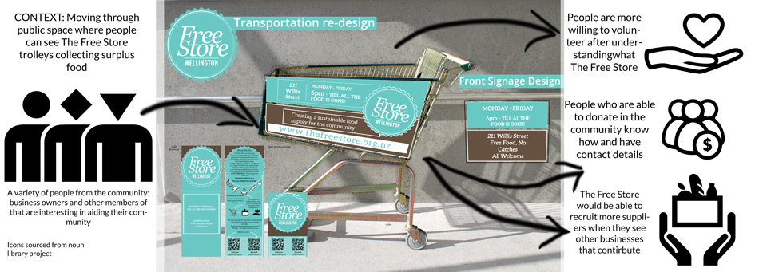
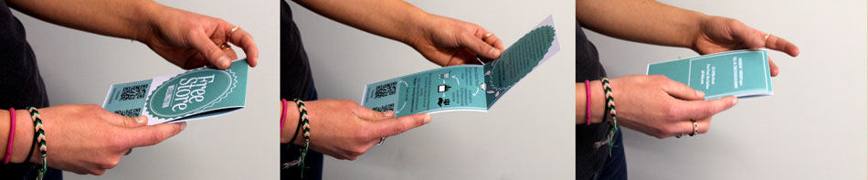
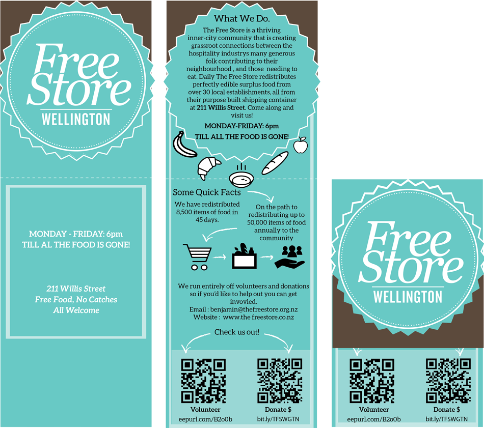
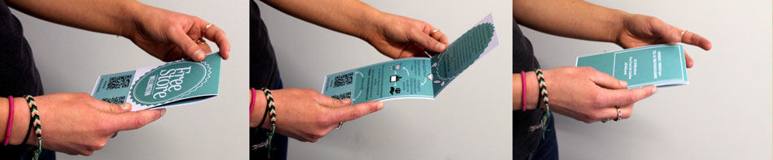
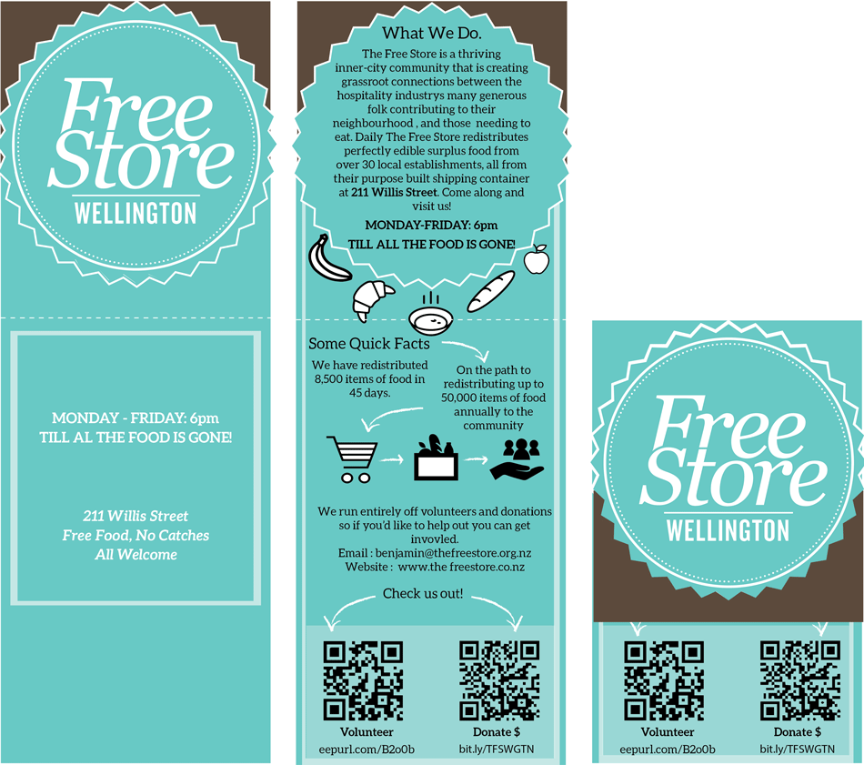

Wellington free store
This project was centered on interviewing a local non-profit and finding out what difficulties they faced in general day-to-day operations. I then narrowed down what creative design solution I could provide them with. Using their current logo and branding information I decided to redesign their main mode of transport – donated shopping trolleys. To reduce costs the non-profit sources donated food from only establishments that are within walkable distances. I needed to improve the branding visibility of the non-profit for free and then allow for some spaces to advertise their supporters. This is what my final solution aimed to do.
I also created a simple info pamphlet that aids in understanding the non-profit to passersby. I wanted to offer a simple material guide to understand how the Wellington Free Store operates.
Designing with a social conscience is important for me. With the cost of food so high and food security being so low within large demographics of New Zealanders. I thought that this non-profit was making a big difference with a very simple solution.
Trolley re-branding and info pamphlet
 


